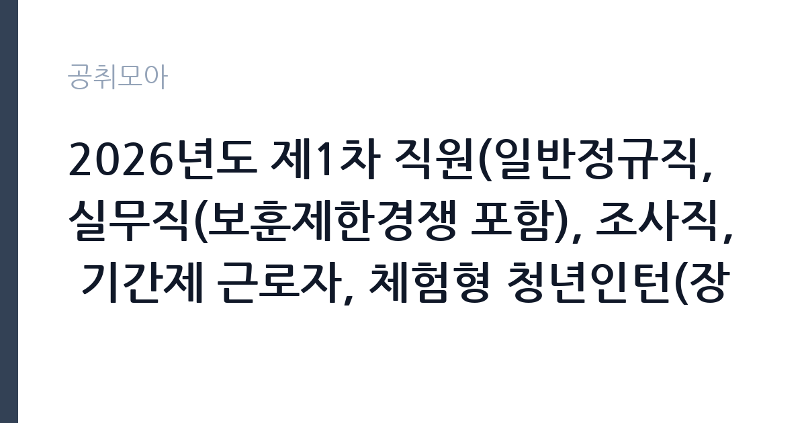

[공공기관] 2026년도 제1차 직원(일반정규직, 실무직(보훈제한경쟁 포함), 조사직, 기간제 근로자, 체험형 청년인턴(장애인 제한경쟁채용 포함) 채용 공고
한국수산자원공단 · 전국 · 마감 2026-11-02 (D-16) · 출처 나라일터

한눈에 보는 모집 조건
| 기관 | 한국수산자원공단 |
|---|---|
| 공고명 | 2026년도 제1차 직원(일반정규직, 실무직(보훈제한경쟁 포함), 조사직, 기간제 근로자, 체험형 청년인턴(장애인 제한경쟁채용 포함) 채용 공고 |
| 고용형태 | 청년인턴(체험형) |
| 근무지 | 전국 |
| 게시일 | 2026-10-16 |
| 마감일 | 2026-11-02 (D-16) |
지원자격, 이렇게 읽으세요
- 일반직(정규직) 10명 실무직(무기계약직) 9명 조사직(무기계약직) 16
- 접수 ~2026-11-02 마감
- 세부 조건은 원문 공고문 확인
분야별 자격 요건이 뚜렷하게 갈립니다. 정규직 연구기술 5급 어선 감정평가는 감정평가사 자격과 해당 분야 3년 이상 경력이 필요하고, 6급 건설안전·산업안전은 건설안전기사나 산업안전지도사 등 법정 자격을 요구합니다. 실무직 전문직 국제옵서버는 박사학위와 5년 경력 또는 석사학위와 8년 경력 같은 경력 요건이 붙습니다. 조사직 수산자원조사원은 해양수산 관련 기능사 이상 자격, 관련 전공 전문학사 이상, 조사·평가 업무 1년 이상 경력 중 하나를 충족하면 됩니다. 행정직 주임급 5명은 보훈제한경쟁으로 취업지원대상자만 지원할 수 있습니다.
이 공고의 포인트
이 공고의 핵심은 무기계약직 25명입니다. 조사직 수산자원조사원 16명은 전국 연안을 돌며 자원 조사를 수행하는 현장 직군으로, 자격 요건이 상대적으로 낮고 정원이 많습니다. 실무직 9명은 보훈제한경쟁 5명을 빼면 일반 지원자 몫이 4명뿐이라 경쟁이 몰릴 수 있습니다. 정규직 10명 가운데 9명이 신규 채용이므로 경력이 짧아도 지원할 수 있는 자리가 있습니다.
전형은 어떻게 진행되나
서류전형에서 모집인원의 5배수 이내를 선발하고, 인성검사와 면접전형을 거칩니다. 면접은 프레젠테이션 발표와 평정요소 심사로 진행되며, 면접 60점 이상 득점자 가운데 고득점 순으로 최종합격자를 정합니다. PT 발표가 포함되므로 서류 통과 후 준비 기간이 길지 않습니다. 분야별 모집 인원과 세부 우대조건, 제출서류는 공단 채용사이트의 공고문 원문에서 확인해야 합니다.
원문에서 확인한 전형 방식
○ 모집분야 - 일반직(정규직): 연구기술 5급 어선 감정평가(감정평가사) 1명, 연구기술 6급 건설안전(안전관리자) 1명, 산업안전 (안전관리자) 1명, 수산자원 조성·관리 2명, 토목공학 3명, 행정 6급 일반 행정 2명 - 실무직(무기계약직): 전문직 국제옵서버 육성·운영 1명, 기술직 주임급 수산자원 조성·관리 2명, 수산종자 자원관리 1명, 행정직 주임급 일반행정(보훈제한경쟁) 5명 - 조사직(무기계약직): 조사직 주임급 수산자원조사원 16명 - 기간제 근로자: (육아휴직 대체인력) 기술직 주임급 수산자원 조성·관리 2명, 수산종자 자원관리 1명 (사업 운영) 기술직 선임급 스마트수산업 전문인력 양성사업 운영·관리 1명, 스마트수산업 빅데이터플랫폼 구축사업 운영 ·관리 1명, 기술직 주임급 수산생물·유전 2명, 수산종자산업진흥센터 운영지원 1명, 수산종자 자원관리 1명, 자율관리어업 및 수산조정위원회 운영 ·지원 1명, 어업생산·관리 1명, 스마트수산업 전문인력 양성사업 운영·관리 2명, 스마트수산업 빅데이터플랫폼 구축사업 운영 ·관리 2명, 국제협력 ODA사업 운영·관리 2명, 행정직 주임급 자율관리어업 및 수산조정위원회 운영·지원 1명, 일반행정
이런 분께 추천해요
- 수산·해양 관련 전공이나 기능사 자격을 갖춘 현장 조사 지원자
- 감정평가사·건설안전기사·산업안전지도사 등 법정 자격 보유자
- 부산 본사나 전국 사업소 근무를 감수할 수 있는 지원자
지원 전 체크리스트
- 분야별 필수 자격을 정확히 대조하고, 자격증 사본을 미리 준비
- 보훈제한경쟁 분야는 취업지원대상자 증명서가 필수임을 확인
- 조사직 근무지가 부산·화성·태안·부안·여수·목포·완도·울진·사천·통영·남해·제주 등으로 나뉘는 점 검토
- PT 면접 대비 발표 자료 초안을 서류 접수와 함께 준비
모집 일정과 제출 타이밍
접수는 2026년 10월 16일부터 11월 2일 오후 6시까지 온라인으로 진행됩니다. 마감일에는 접속이 몰리는 경우가 있어 마감 전날 제출이 안전합니다. 서류전형 결과 발표 후 인성검사와 면접이 이어지고, 면접은 프레젠테이션 발표를 포함합니다. 최종합격자 발표와 임용 일정은 공단 채용사이트 공지로 안내됩니다.
직무 이해하기: 공공기관
공단의 일은 수산자원을 보호하고 키우는 데서 출발합니다. 조사직 수산자원조사원은 연안과 근해에서 자원량 조사, 어획물 표본 측정, 수산종자 방류 효과 확인 같은 현장 업무를 맡고, 배를 타고 조사에 나서는 날이 많습니다. 실무직 기술직은 수산자원 조성과 종자 관리, 국제옵서버 육성 사업 운영을 지원합니다. 정규직 연구기술 직군은 어선 감정평가, 안전관리, 토목, 수산자원 조성 사업을 담당하고, 행정직은 예산·인사·계약 실무를 맡습니다.
자기소개서 작성 팁
자기소개서는 지원 분야의 자격 요건과 자신의 경력을 1대1로 맞춰 쓰는 것이 기본입니다. 조사직이라면 어떤 수역에서 어떤 방식으로 조사했는지, 사용한 장비와 표본 처리 과정을 구체적으로 적으십시오. 정규직 기술직은 자격증 취득 과정과 실무 적용 사례를 함께 쓰면 설득력이 생깁니다. 공단이 수행하는 자원 조성 사업의 목적을 한두 문장으로 설명할 수 있으면 직무 이해도가 드러납니다.
면접 준비 포인트
면접은 PT 발표와 개별 질의로 나뉩니다. 발표 주제는 직무와 관련된 정책 과제가 주어지는 형태가 일반적이므로, 서류 합격 후 짧은 기간에 자료를 정리할 수 있도록 평소 수산자원 이슈를 정리해 두는 것이 좋습니다. 질의에서는 현장 근무 수용 여부, 승선 근무 가능 여부, 안전관리 인식이 확인됩니다. 자격 요건에 대한 확인 질문도 나오므로 증빙 서류와 답변이 어긋나지 않게 준비하십시오.
급여·근무조건 읽는 법
보수는 한국수산자원공단 보수규정과 직급별 호봉에 따라 책정되며, 공고문에 직급별 보수 기준이 제시됩니다. 구체적인 금액은 원문에서 확인하십시오. 정규직과 무기계약직은 기간의 정함이 없는 고용 형태로 정년까지 근무할 수 있고, 기간제 근로자는 계약 기간이 정해져 있습니다. 청년인턴은 체험형으로 별도 보수가 적용됩니다. 수당과 복리후생은 공단 규정을 따르며, 실수령액은 세금과 4대보험 공제 후 금액입니다.
자주 묻는 질문
- 정규직과 무기계약직은 어떻게 다른가요?
정규직은 일반직 직원으로 채용되는 신분이고, 무기계약직은 기간의 정함이 없는 근로계약을 맺는 실무직·조사직입니다. 둘 다 정년까지 근무할 수 있습니다. - 조사직은 배를 타야 하나요?
수산자원조사원은 현장 조사와 승선 업무를 포함합니다. 근무지와 승선 여부는 분야별 직무설명서에서 확인하십시오. - 보훈제한경쟁 분야에 일반인도 지원할 수 있나요?
행정직 주임급 5명은 보훈제한경쟁으로 취업지원대상자만 지원할 수 있습니다. 일반 지원자는 다른 분야를 확인해야 합니다.
함께 보면 좋은 공고
[공공기관] 2026년도 제1차 직원(일반정규직, 실무직(보훈제한경쟁 포함), 조사직, 기간제 근로자, 체험형 청년인턴(장애인 제한경쟁채용 포함) 채용 공고 — 마감 2026-11-02[공공기관] 한국폴리텍대학 창원캠퍼스 행정지원직(사무직원 휴직 대체인력) 채용 공고 — 마감 2026-10-25[공공기관] 우체국물류지원단 경인지사 안양사업소 기간제(운전직) 채용 공고 — 마감 2026-10-22출처: 나라일터 공개정보를 바탕으로 공취모아가 정리한 안내글입니다. 모집 조건·일정은 변경될 수 있으니 지원 전 반드시 원문 공고문을 확인하세요. 본 글은 정보 제공용이며 합격을 보장하지 않습니다.